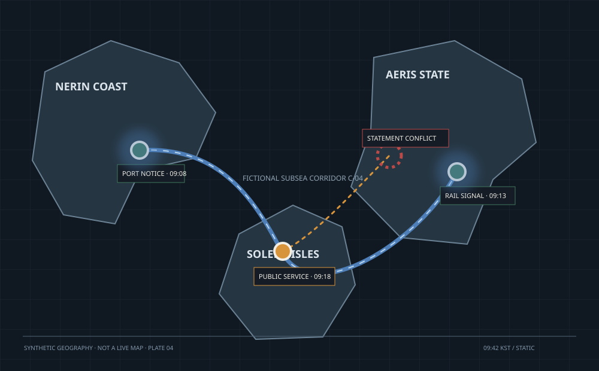
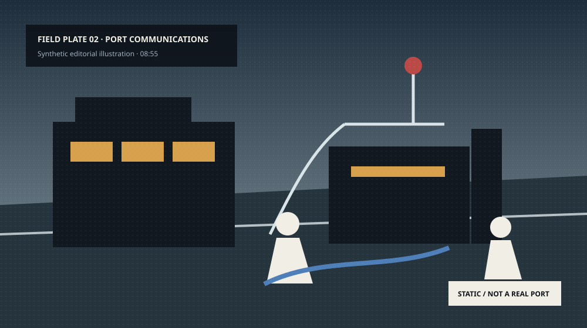

FICTIONAL COASTAL ATLAS · PLATE 04해저 통신 회랑 장애

상호 확인
확인 대기
진술 충돌
세 해안 지역의 서비스 장애가
하나의 해저 회랑과 연결되는가
항만·철도 예약·공공 서비스에서 비슷한 시각의 장애가 보고됐지만, 공식 설명은 서로 일치하지 않는다.
4상호 확인된 사실
2충돌 주장
3정보 공백
항만 공지 · confirmed
기반시설 분석 · corroborating
정부 발표 · conflicting
